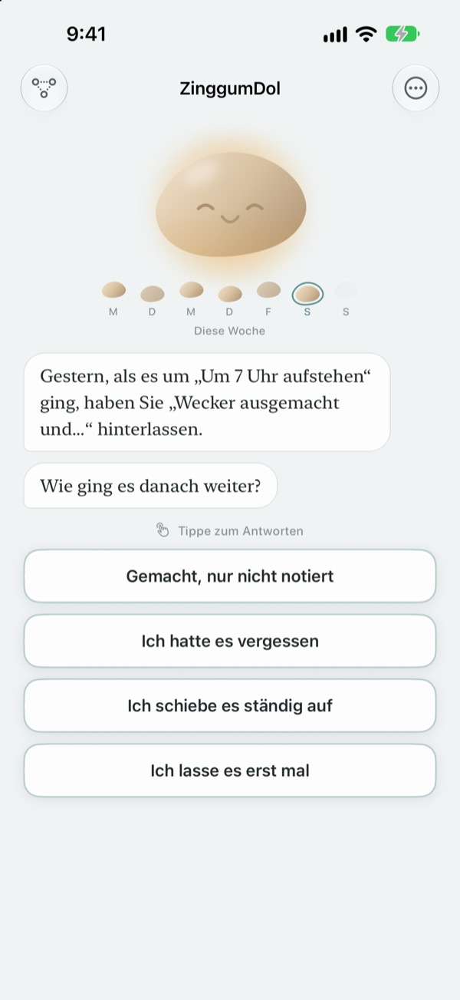
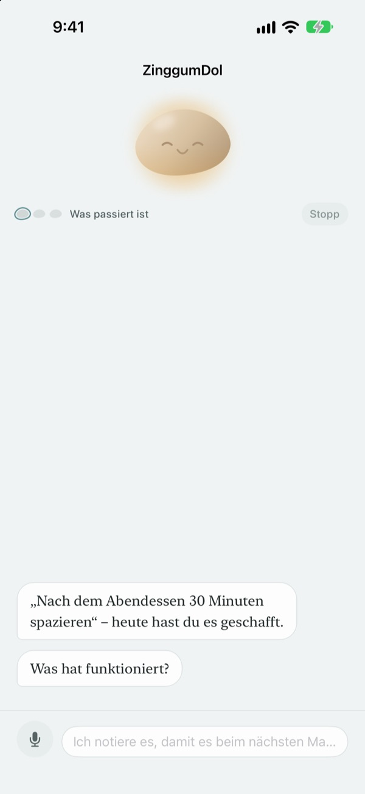
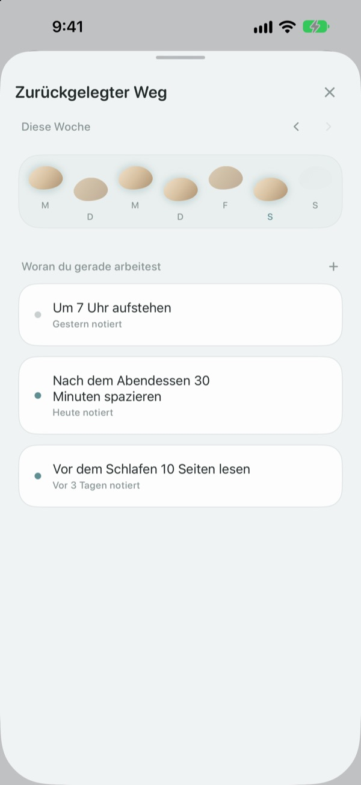
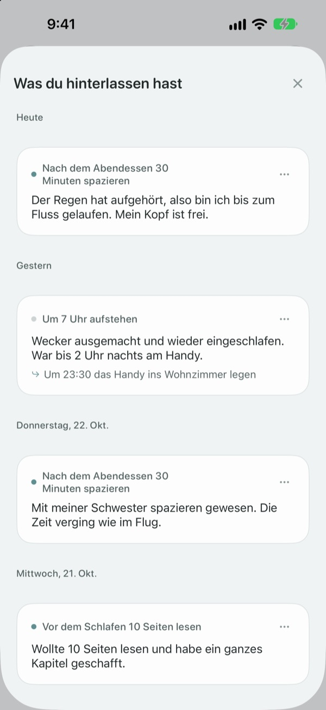

Danebengetreten heißt nicht,
dass du im Bach liegst
An einem Tag, an dem du dein Ziel verpasst, spricht dich der Kiesel zuerst an. Er fragt, was passiert ist, nicht, was du falsch gemacht hast, und hält Ereignis und Gefühl auseinander.
Gespräche, Einträge und dein Weg sind kostenlos. Keine Anmeldung, keine Werbung.

Sprich mit dem Kiesel
Du wolltest heute Abend spazieren gehen und hast es nicht geschafft. Tipp eine Antwort an oder schreib selbst, und der Kiesel antwortet genau wie in der App.
Gibst du dir selbst die Schuld, wenn ein Tag anders lief?
Am Abend nach dem ausgefallenen Training kommt meist zuerst: „Was stimmt nicht mit mir?“ Schaut man genauer hin, gab es Überstunden, es hat geregnet, du warst völlig erledigt. ZinggumDol fragt in getrennten Schritten, was passiert ist und wie es dir geht, und legt beides nebeneinander. Wenn du siehst, dass es an den Umständen lag und nicht an deinem Willen, findest du den nächsten kleinen Schritt leichter.
Der Kiesel spricht dich zuerst an
Leg ein Ziel fest, und der Kiesel behält die Tage im Blick, an denen es geklappt hat und an denen du hängen geblieben bist. Rutscht ein Tag durch, fragt er „Was ist passiert?“ statt „Warum nicht?“, und er erinnert sich an das, was du ihm letztes Mal erzählt hast.
Wenn dir Schreiben zu viel ist, sag es einfach. Die Sprache wird auf deinem Gerät erkannt, Aufnahmen werden nie gespeichert.

Deine Tage als Trittsteine
Jede Woche liegt als Reihe von Trittsteinen vor dir. Auch die Tage, an denen du nicht drauf getreten bist, bleiben liegen; gelöscht wird nichts.
Selbst mit einer Lücke siehst du: Der Weg geht weiter.

Lies wieder, was du geschrieben hast
Was passiert ist, wie du dich gefühlt hast und was du als Nächstes probierst, sammelt sich nach Datum. Schau dir einen Tag an, an dem du ähnlich festhingst, und du siehst, was geholfen hat.
Ein Widget zeigt dir auf dem Home-Bildschirm ein Wort vom Kiesel, und eine Erinnerung zur gewünschten Uhrzeit lädt dich ein, auf den Tag zurückzublicken.

In drei Schritten startklar
- 1
Ein Ziel aufschreiben
Etwa „Nach dem Abendessen 30 Minuten spazieren“.
- 2
Am Abend die App öffnen
Der Kiesel fragt, wie dein Tag war. Mit einer Erinnerung vergisst du es nicht.
- 3
Antippen oder selbst schreiben
Mit
Ich lasse es erst malkannst du jederzeit aufhören.
So verläuft ein Gespräch
- Was passiert ist
- Nur die Fakten: was dazwischenkam
- Gefühl
- Wie du dich gerade fühlst, auf einer Skala mit fünf Stufen
- Rückblick
- Der Kiesel gibt dir Ereignis und Gefühl getrennt zurück
- Nächster Schritt
- Du wählst selbst etwas Kleines, fünf Minuten reichen
- Abschluss
- An einem richtig schweren Tag fragt er nichts mehr und schlägt eine Pause vor
Du kannst jederzeit aussteigen, und was du bis dahin gesagt hast, bleibt erhalten.
Reden und Schreiben sind kostenlos. Pro gibt es, wenn du mehr willst.
Kostenlos
- Alle Gespräche mit dem Kiesel
- Bis zu drei Ziele
- Sprechen statt tippen
- Dein Weg und alles, was du geschrieben hast
- Widget und tägliche Erinnerung
- Sperre mit Code
ZinggumDol Pro
- So viele Ziele, wie du willst
- Sechs Kiesel-Oberflächen zur Auswahl
- Einträge als Textdatei exportieren
Einmal kaufen, für immer behalten. Kein Abo.
Mitten im Gespräch taucht nie ein Kaufbildschirm auf. Auf einem neuen Gerät oder nach einer Neuinstallation tippe in den Einstellungen auf Käufe wiederherstellen.
Häufige Fragen
Muss ich jeden verpassten Tag erklären?
Nein. Tipp jederzeit auf Ich lasse es erst mal, und das Gespräch endet sofort. Was du bis dahin gesagt hast, bleibt erhalten, sodass du später weitermachen kannst.
Ich habe es gemacht, aber die App sagt, ich hätte es nicht.
Tipp auf Gemacht, nur nicht eingetragen. Der Kiesel nimmt die Korrektur an und fragt stattdessen, was geholfen hat. Was funktioniert hat, merkt er sich und holt es wieder hervor, wenn du das nächste Mal festhängst.
Wohin geht das, was ich laut sage?
Deine Sprache wird auf dem Gerät in Text umgewandelt, die Aufnahme wird nie gespeichert. Auf unterstützten Geräten werden deine Sätze leserlicher geglättet, auch das passiert auf dem Gerät.
Wie viele Ziele kann ich haben?
Drei kostenlos. Bist du mit einem fertig, mach unter Zurückgelegter Weg Loslassen, um Platz zu schaffen. Für mehr als drei brauchst du ZinggumDol Pro.
Ist ZinggumDol Pro ein Abo?
Nein. Du zahlst einmal und behältst es. Auf einem neuen Gerät oder nach einer Neuinstallation tippe in den Einstellungen auf Käufe wiederherstellen.
Kann jemand anderes mein Tagebuch lesen?
Es gibt kein Konto. Deine Einträge liegen nur auf deinem Gerät und in deiner eigenen iCloud, und in den Einstellungen kannst du die App mit einem Code sperren. Was du schreibst, wird nie an den Entwickler geschickt. Anonyme Nutzungsstatistiken kannst du in den Einstellungen ausschalten.
Wie ändere ich die Uhrzeit der Erinnerung?
Unter Tägliche Erinnerung in den Einstellungen schaltest du sie ein oder aus und wählst die Uhrzeit.
Erinnert mich der Kiesel auch an frühere Erfolge?
Ja. Was dir früher geholfen hat, merkt er sich, und an einem schweren Tag erinnert er dich an etwas, das du kürzlich geschafft hast.
Wie lösche ich alles?
Tipp in den Einstellungen auf Alle Einträge löschen. Ziele und Einträge sind dann endgültig weg, auch auf anderen Geräten, die über iCloud verbunden sind. Einstellungen und Käufe bleiben. Mit Pro kannst du vorher mit Einträge exportieren eine Kopie sichern.
Wie erreiche ich euch?
Über „Feedback senden“ in den Einstellungen der App oder per Mail an die Adresse unten.
Fragen oder Feedback? Schreib an leeo@kakao.com.